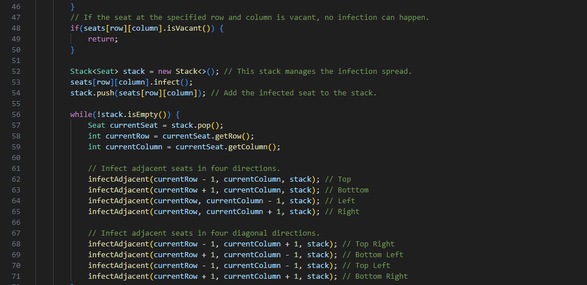

Java Project
This project in java simulates the spread of infection in a movie theatre.
HTML Project
This project is a responsive personal portfolio website to showcase my skills, projects, work experience, and educational background as a Computer Information Systems student. The site is built using HTML for structure and CSS for styling, with Java script incoroporated for enhanced interactivity and user engagement.

Unity C# Project
This project is a 3d remake of Pokemon Emerald using voxel based envrioments and objects, coded entirely in c#.